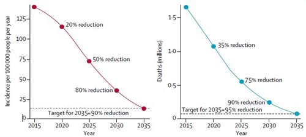
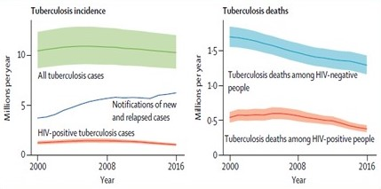
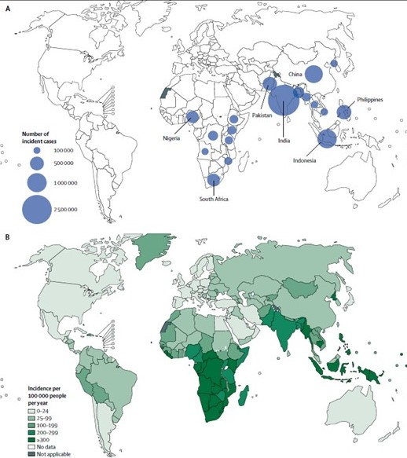
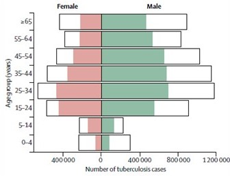

Epidemiology of Tuberculosis: A Case Study (2000 - 2016)
Exploring the epidemiology trend of tuberculosis over a 16-year period from the Year 2000 to the initiation of the End TB Strategy in 2016.
Overview
Tuberculosis is linked with about 40% of deaths occurring in the global population of people living with human immunodeficiency virus2. In the global population, is generally considered as the leading cause of death (WHO, 2018) in single disease infections. Tuberculosis has a dated history with the human race.
Scientific evidence supporting survival through time has been validated by recent findings indicating that the causative organism no known environmental reservoir. This infection caused by Mycobacterium tuberculosis is known to mainly affect the lungs, presenting in humans as the most common pulmonary disease4.
The primary route of transmission between humans has long been established as airborne. Depending on the environmental conditions at exposure and the severity of infection of the source patient, tuberculosis can present differently. At the initial stage of infection (Primary TB), the symptoms resolve rapidly in many healthy individuals. In immuno-compromised persons, the infection progresses to a secondary stage and require therapy. Latent tuberculosis is diagnosed in persons with a dormant Mycobacterium tuberculosis variant.
This paper examines the epidemiology of Tuberculosis over a 16-year period from 2000 to the initiation of the End TB Strategy in 2016.
A. Data on Global Tuberculosis Incidence and Death (2000 - 2016)
In 2016, an estimated 10.4 million new cases were reported globally. An estimated 10% of this total number were recorded in immuno-compromised patients (HIV-positive). The numbers recorded this year followed a trend of decline that have been recorded since year 2000 (1.4% decline per year). The mortality rate linked to TB has also been on a steady decline since year 2000, with 1.7 million in 2000 to 1.3 million in 2016 among the HIV-positive population. Between 2015 – 2016, the mortality rate (measures as deaths per 100,000 people annually) among the HIV-negative population decreased by 3.4%.


B. Data on Incidence Rate By Countries (2016)
A decline in the rate of TB incidence and mortality were noticed in countries implementing the End TB strategy, especially in Europe. In Africa’s heavy-burden countries including Zambia, Lesotho, Kenya, Namibia and Zimbabwe, the rate of decline in cases recorded was estimated as 4% annually from 2015. As at 2016, the regional incidence of Tuberculosis varied by geographical locations and degree of strategy implementation.
Seven countries contribute an estimated 64% to the global incidence rate. India recorded 27% of the global incidence cases (measured as new cases per 100,000 people annually), Indonesia recorded 10%, China, 9%, Philippines 5% Pakistan, 5%, South Africa, 4% and Nigeria, 4%. Countries in the European region accounted for 3% of the global incidence and the Eastern Mediterranean region contributed 7%.

C. Data on Tuberculosis Incidence by Sex Distribution (2016)
Tuberculosis incidence and mortality were mostly studied in the general population as divide between immuno-compromised persons and healthy persons. However, in the Global Tuberculosis Report published by WHO in 2017, the incidence cases by sex was analyzed. For both sexes, incidence of tuberculosis was highest in the population of people between 25-34 years. Incidence was lowest in children below 4 years and children within the 5 -14-year age bracket.

Discussing Available Data Trends
The mortality rate of tuberculosis in healthy and immuno-compromised persons have triggered a global response to stem the tide of infection. In 2017, over 10 million incident cases of tuberculosis was recorded, with mortality set at 1.57 million deaths (WHO, 2018). The stats recorded showed a steadily decline in the global Tuberculosis burden as recorded in the previous year –about 1.8% decline in incident cases and 3.9% decline in global deaths due to tuberculosis.
The World Health Organization introduce the DOTS strategy in 2000, until it was replaced by the Stop TB strategy in 2006.
Both strategies were aimed at halting and reversing tuberculosis incidence and reducing the tuberculosis prevalence and mortality by 50% by 2015. In 2016, the World Health Organization commenced a post-2015 tuberculosis strategy (End TB Strategy) aimed at ending the global tuberculosis epidemic. This new strategy was expected to cover the 2016 – 2035 TB analysis period, achieving a 35% reduction in absolute number of TB deaths and a 20% reduction in TB incidence by 2020.
As it stands, the rate of decline in incidence and death will not be enough to meet the WHO End TB strategy target for 2035. Substantial reduction in tuberculosis deaths will be necessary to meet the first installment aim by 2030.
Variations in the epidemiology of TB have been consistently tracked by geographical distribution and, now by sex and age distribution. Africa constitutes one of the highest regional prevalence rate of tuberculosis. Co-infection with HIV is considered an important factor in the rate of TB epidemic in this region.
A compromised immune system has been linked with increased mortality in people infected with mycobacterium tuberculosis1
In Asia, the data recorded by the WHO datasheet on global Tuberculosis burden show similarity to that in Africa. The incidence rate revealed a rising case of tuberculosis infection in the region. However, compared to Africa, there is a lower burden of HIV infection in this region. Other risk factors such as poverty, undernutrition, poor hygiene control in crowded spaces and lack of adequate medical care contributes to the driving force of tuberculosis infection in this region.
In Europe, the cluster of countries only contributes about 3% to the global incidence of tuberculosis in 2016. The burden of tuberculosis in this region tilts toward therapy failure and not risk factors that substantially increases new infections as in Africa and Asia. Multi-drug resistant TB strains (MDR TB) is considered a major problem in Europe. The proportion of MDR TB cases in this region is about 5 times higher compared with other regions, posing a major challenge in treating cases of tuberculosis.
Enhanced strategies might be needed to combat the prevalence of TB in this region. Experts have suggested pre-testing and treatment for multi-drug resistant TB, screening for coinfection with HIV among the vulnerable groups and addressed the challenges posed by poverty and malnutrition.
Reviews on the global burden of tuberculosis opened new insights into how to better control annual incidence rate of tuberculosis in a bid to meet the target for 2035. As at 2016, an estimated one third of the global population has latent TB infection and are at direct risk for a secondary infection that can significantly increases future risk for TB3.
In 2018, the WHO recognized this problem and released an updated guideline for the management of Latent TB.
This therapy guideline was slowly implemented in many countries and current data suggest that the coverage level falls below the End TB strategy target for 2025. Treatment of latent TB can directly impact the incidence and prevalence rate recorded for tuberculosis infections globally in subsequent years
The World Health Organization and regional health bodies continuously examine and optimized the Stop TB strategies as it applies in their regions. Many scientific reviews have called for regional annual reports on incidence and mortality to better estimate the improvement in the global TB burden. This can also help for objective assessment of the WHO data sheet on tuberculosis annually and to track improvement in epidemic control.
The data sheet on Tuberculosis presented by WHO in 2016, was reportedly based on direct reflections from national surveys on tuberculosis by 24 countries. This accounts for 68% of the global burden of this infection. Standard adjustments on data allow for underreporting or under-diagnosing for 134 countries constituting 15% of the global TB burden.
During the period tracked in this paper, the estimation of death caused by tuberculosis was based on national registration of cases of death for 129 countries constituting 57% of the estimated tuberculosis death globally. WHO also used estimates produced by the Institute of Health Metrics to estimate tuberculosis death in 18 countries. Currently, the epidemiologic estimates only show modest improvement in the global TB burden, as determined by steadily declining incidence, mortality and prevalence rate, pegged at an average of 1.4% annually. Intensified and concerted effort are needed to meet the targets set for 2035 and beyond.
Innovative approaches and modification of the strategy guidelines are required in regions with a significant annual burden of tuberculosis. These include pre-screening for HIV co-infection, implementation of latent TB therapy guidelines, innovative TB therapy regimen and ensuring hygiene in clustered regions, especially in Africa and Asia. These strategies are tipped to significantly decreases the global burden of TB in subsequent years.